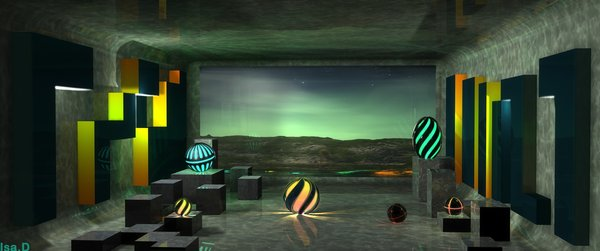

10 Экономия энергии для осознанных сновидений
Начинать работу над осознанными сновидениями надо в состоянии бодрствования.
Чтобы сэкономить энергию, нужную для сновидения, я после длительных медитаций и прочтения большого количества восточной и западной литературы попыталась разобраться, куда же она расходуется. Выводы такие:
1) Будущее. Перечень несбыточных дел. "Обязательно сделаю, но только не сегодня".
Эти якобы-планы создают энергетические нити, по которым из нас уходит энергия.
Решение:
• Составить список дел на будущее.
• Те дела, которые выполнить действительно необходимо, разбить на мелкие этапы и запланировать их выполнение по какому-то событию (например: надо научиться _чему-то_. Но это что-то настолько большое и неохватное, что кажется - начнешь сейчас или через месяц - роли не играет. И не понятно, как к этому делу подступиться. Если разбить это _что-то_ на много маленьких этапов, становится гораздо проще - к ним уже психологически гораздо проще подступиться, они не кажутся массивными глыбами. Можно решить, что сразу после завтрака я полчаса трачу на каждый маленький этап. Таким образом, через определенный срок дело оказывается сделано само собой)
• Насчет остальных дел - надо честно себе признаться - пока не возникнет соответсвующей задачи, выполнять их не буду и вычеркнуть их из списка. Не надо себя обманывать тем, что в эфемерном будущем время (а, главное, желание!) их делать обязательно появится. Пусть они перестанут мучать впустую. Если такое время придет - значит, быть тому, они могут вновь вернуться в список дел.
2) Настоящее. Выкинуть все лишнее.
• Пересмотреть свой список текущих дел и выкинуть все "висяки", которые ничего не приносят, но которые начинались делаться "потому что потому", либо довести их до конца, если это действительно нужно. Убрать просто ненужные дела, направленные на подкормку ЭГО (точнее, той его части, которая хочет доказывать всем и вся свою значимость). Это крайне вредная вещь. Видимо, в процессе эволюции она играла свою роль, сейчас же оно превратилось в паразита, отъедающего энергию. Очертить круг только нужных дел, их и выполнять. Остальное выкинуть.
• Брать ровно столько, сколько можешь отдать. В мире энергии всегда стоит соблюдать балланс. Это как дыхание - сколько вдохнул, столько и выдохнул. Когда начинаешь "брать от жизни все", на самом деле растрачиваешь себя, посколько энергетически вынужден отдавать столько же, сколько берешь. Это касается не только людей, но и природы, мира вообще. Человек и так получает очень много из этого мира - информации, знаний, идей..
• Не кормить энергетических хищников. Управлять своим настроением и состоянием. Не позволять себе непозволительную роскошь впадать в уныние или другие негативные эмоции.
Как правило, люди напоминают духовку с незакрытой крышкой, которая, вместо того, чтобы испечь пирог, греет всю кухню. В результате: пирог остается непропеченным, в кухню выбрасывается тепло, о котором печку никто не просил - открываются форточки, включаются вытяжки. Никого облагодетельствовать своим неправильно направленным теплом у духовки не выйдет.1. Благодарить мир за любую трудность на пути - воспринимать ее как тренажер, который делает нас сильнее
2. Воспринимать каждого человека как учителя, пусть даже тот сам того не осознает. Если человек делает то, что мы не хотим - быть благодарными: он тренирует нашу выдержку и терпение. Именно благодаря ему мы быстрее прийдем к цели.
3. Разделять внутренний свет в людях, заложенный в них изначально с внешними их проявлениями - отражениями мира. Поскольку люди очень часто занимаются тем, что являются "зеркалами мира", их поступки не имеют значимости и не могут затрагивать чужое эмоциональное состояние.
• Не вкладывать слишком много душевной энергии в преходящие повседневные вещи.
Это вовсе не означает, что нужно стать пофигистом. Наоборот: выполнять свои задачи нужно точно, четко, оптимально, однако, сохраняя эмоциональную дисциплину. Что-то получается: хорошо. Но излишне не радоваться. Сделать вывод. Пока все празднуют, готовить следующие шаги. Не получается - тоже радоваться - жизнь нас испытывает на прочность. Сделать вывод. Пока все мечутся, прикидывать план действий, куда идти дальше. Запретить непозволительную роскошь - переживать. Все равно делу это не поможет. Лучше вложить эту энергию в работу.
• Развивать концентрацию внимания, самодисциплину, силу воли.
Концентрация внимания поможет удерживать внимание сновидения. Самодисциплина и воля помогут довести задачу сновидения до конца, избежать потакания себе в сновидении и вспомнить поставленную в состоянии бодрствования задачу, которую необходимо выполнить в сновидении."Чтобы воспитывать волю, надо делать то, что не хочется делать" (Януш Корчак "Король Матиуш Первый")
Регулярные практики помогают достижению этой задачи. Это могут быть не обязательно восточные или какие-нибудь еще оккультные практики, но и в частности, любое дело, которое будет повторяться без пропуска, без отсылки на плохую погоду, на лень или нежелание.
В числе дел я выбрала для себя ежедневную уборку вечером. Занимает минут 20, не больше. Во-первых, для меня раньше уборка была важным раздражителем. Во-вторых, это аллегоричное действие. Когда каждый день видишь, сколько мусора ты выметаешь, ты понимаешь, что точно так же, каждый день надо работать над собой, стирать пыль и выметать мусор из своей души. И стоит тебе пропустить день - отложить работу над собой - как потом количество выметаемого мусора увеличится.• Остановить поток мыслей.
Как я поняла - останавливать внутренний диалог можно двумя способами:
- Лишение информации
Этому отлично способствует медитация. В качестве уловки, чтобы перебить поток мыслей и сохранить внутреннюю тишину, можно читать любимую мантру
- Переполнение информацией
Я для этого использую быстрый просмотр большого количества более-менее абстрактных картинок, таких как фракталы. В определенный момент внутренний диалог останавливается, восприятие изменяется. Часто у меня это сопровождается "пробросом в прошлое" - вижу фрактал и явно в нем вижу давно забытую сцену из детства или что-то в этом духе.
Внутренний диалог - это наш защитный механизм. Как только он по-настоящему останавливается, человек может в себя впустить все то, что отсекалось этим щитом. Внутренний диалог - вещь вовсе не вредная, поскольку защищает нас от опасных вещей, которые, бывает, к нам стучатся извне. Но его минус - фиксирование текущего состояния осознания, энергетической конфигурации. Затруднение скольжения, необходимого для сновидения.• Присуствие "здесь и сейчас". Свести действия автопилота к минимуму.
Человек очень много действий совершает на автопилоте. Это одна из основных причин,которая мешает ему осознать себя во сне.
Несколько раз в день стоит останавливаться и спрашивать себя - а не сон ли это? Как я сюда попал? Вообще мог ли я оказаться в Таити, если еще три часа назад я завтракал в Ростове-на-Дону? Однажды такая привычка перейдет и в сон и наступит день, когда человек непременно спросит себя об этом во сне.
Чтобы свести к минимуму действия автопилота, стоит выбирать разные маршруты на работу/с работы, посещать те места, где мы раньше не были. Совсем не обязательно ради этого ехать в экзотические страны - пусть даже это будет в собственном городе.• Забота о физическом теле. Диета.
Пища желательно саттвическая. Не есть на ночь. Поменьше сладкого, жирного, мучного и прочего. Перед сном только самое легкое. Тяжелая пища на ночь не улучшает осознанность во сне. За каждый раз съедать немного, зато есть чаще. Заниматься физическими упражнениями. Болезни тела очень сильно поглощают внимание в сновидении, этого нужно избегать.• "Скольжение" в состоянии бодрствования.
Оставить на время свою любимую личность с ее любимым прошлым в покое. Отпустить себя - перестать про себя всем все рассказывать в социальных сетях и на каждом углу. Представить себя актером - придумать несколько других личностей, попытаться вжиться в этот образ. Каждый раз, отправляясь в новое место, можно быть личностью другим прошлым, с другими взглядами на жизнь, вкусами в одежде и т.п, социальным положением. Можно посмотреть на мир глазами топ-менеджера, глазами хиппи, глазами заболтивой тетушки или продавщицы в магазине - и каждый этот опыт, если будет полностью продуман, будет уникален.
Многие писатели грешат тем, что их персонажи - эфемерны, полупризрачны ("В комнату вошел человек в Черных очках." Дальше примечание - в остальном он был абсолютно голым). Эти авторы не создают их персонажам полноценные личности, с прошлым и настоящим, пусть это будет даже мелкая роль. В результате и произведение не ощущается в полной мере. Так же и здесь. Стоит разработать личность со всеми мельчайшими деталями, прежде чем становиться ей. Это вовсе не значит обман по отношению к другим людям. Людям, по сути, вообще не важно, кто мы такие - им важно, как мы их воспринимаем и как себя ведем по отношению к ним. Так же это не имеет ничего общего с раздвоением личности - речь не идет о преобретении душевного заболевания.
Это поможет осознать, что где бы ты ни был и кем бы ты ни был, ты везде остаешься собой.
Для многих людей это в высшей степени сложно - поставь человека в непривычную ситуацию - он сразу теряется. Отними у крупного бизнесмена привычный смартфон, портфель и пиджак с фименным лейблом и комфорт, дай ему в руки лопату - он руки на себя наложит.
Однако в осознанных снах подобная гибкость самоосознания крайне важна, чтобы не дать нашему вниманию рассеяться в нестандартной ситуации.
Есть противопоказания: одна очень впечатлительная актриса, сыграв роль Анны Карениной, бросилась под поезд.
3) Прошлое. "Возвращение". Разрыв энергетических нитей с прошлым.
Разложить по полочкам, вернуть энергию из тех моментов, в которые она была затрачена, порвать энергетические нити, которые до сих пор тянутся из сцен прошлого.
Чем более полно удастся вернуться в сцену из прошлого, где произошло событие, заставившее нас выплеснуть большое количество энергии, пережить ее с текущим опытом, порвать нить, связывающую с тем моментом, вытолкнуть это событие из нас, дать ему жить своей жизнью, тем легче будет вернуть энергию и в снах оно нас больше не будет беспокоить.
Вначале кажется - это пустая трата времени, что и так все почти помнишь. Однако, когда я дала себе команду вспоминать, через какое-то время начали твориться чудеса: те воспоминания, которые казались давно забытыми, начали возвращаться сами собой, выскакивая, словно чертик из табакерки в те моменты, когда их совсем не ждешь. Начались "пробросы" в сцены прошлого такой явности, что я ощутила энергетическое скольжение - перемещение энергетической конфигурации, когда становилась той из прошлого и обратно собой. Иногда эти воспоминания накатывали вообще спонтанно, заставая врасплох. Несколько раз они возникли, когда я была на работе, да так сильно, что я чуть не вскрикнула, когда пережила те сцены. Зато потом они уже отпускают, и больше не являются в сны.
